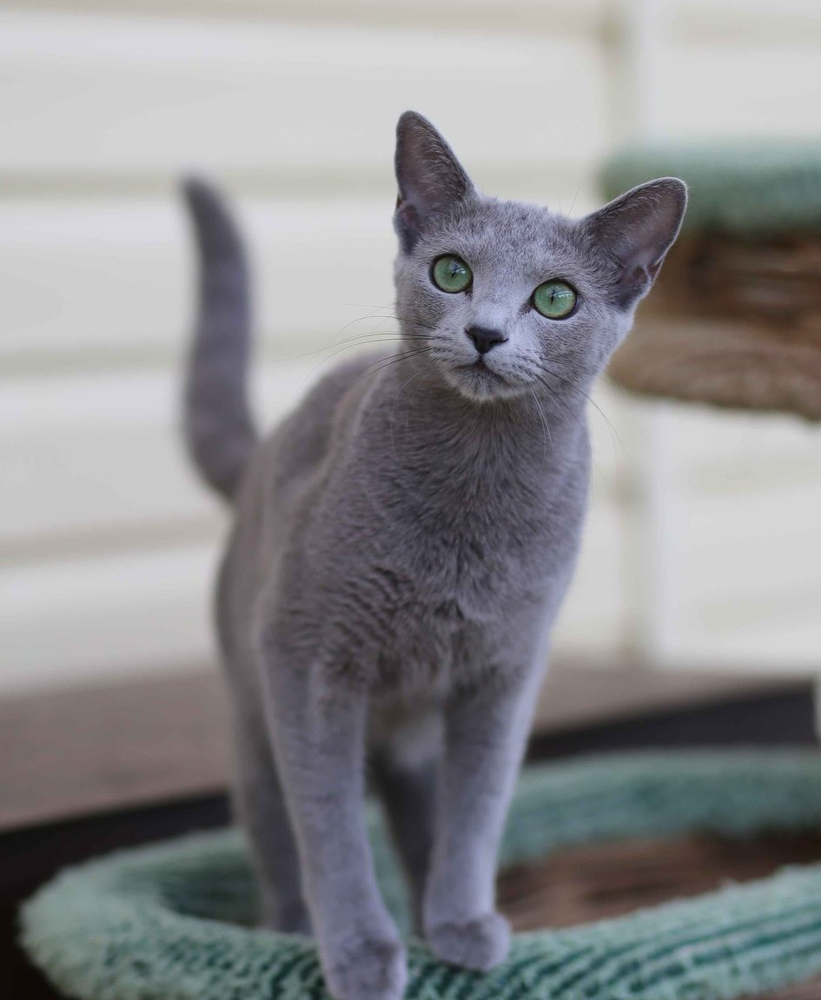

.png) Все о котиках
Все о котикахО чем можно узнать здесь?
В данном разделе Вы можете узнать интересную информацию о разных породах кошек. Это поможет тем, кто никак не может подобрать подходящую для себя породу или для тех, кто просто любит котиков и хочет знать о них немного больше.
Кроме того, милые картинки, интресные и забавные факты точнно поднимут Вам настроение:)))

Абиссинская кошка
Характеристика породы
-Короткошерстные породы
-Средний размер
-Вес 4-9 кг
-Средняя продолжительность жизни 12-16 лет
-Общительные / Активные / Преданные / Общительные / Привязчивые
Описание породы
Абиссинские кошки могут быть очень ласковыми, но только на своих условиях и по настроению. Они очень обаятельны, но могут быть чрезмерно озорными. Хорошо ладит с другими домашними животными, маленькими детьми. Абиссинская кошка игривая и активная, она хорошо подходит на роль товарища по играм. По мере взросления она крепко привязывается к людям и старается всегда находиться рядом с ними. Абиссинская кошка — общительная, энергичная, преданная и довольно общительная порода. Несколько пугливы, боятся резких громких звуков. Любят сидеть на высоте, ходить по шкафам, залезать на полки. Участвуют во всех делах и плохо переносят длительное одиночество, равнодушное отношение хозяина. Чистоплотны, линяют мало, к купанию обычно относятся положительно Это очень умные животные, в которых удивительным образом сочетаются величественные повадки, любовь к хозяину и подвижность. Они преданы, уравновешены, готовы дарить и получать внимание. Питомцы имеют хорошее здоровье, недороги в содержании. Абиссины подходят для семей с детьми, активных позитивных людей.
Важно!
Не требует интенсивного ухода за шерстью
Требует постоянного внимания
Историческая справка
Абисси́нская кошка — порода домашних кошек, выведенная в Великобритании в конце XIX века на основе аборигенных пород кошек Восточной Африки и Юго-Восточной Азии. Абиссинская — одна из самых древних пород кошек и одновременно одна из первых пород, получивших официальный выставочный стандарт.
Интересные факты
В 1978 году студия Walt Disney Productions выпустила фильм под названием «Кот из далёкого космоса» («The Cat From Outer Space»). В главной роли кота-пришельца, попавшего на Землю в результате поломки космического корабля, был показан абиссинский кот. При этом на съёмках было задействовано двое животных этой породы, кот и кошка.
Среди знаменитых владельцев абиссинских кошек певец Дэвид Боуи и киноактёр Николас Кейдж.
У абиссинцев сильно развит родительский инстинкт, коты не меньше кошек заботятся о потомстве и следят за котятами.

Бенгальская кошка
Характеристика породы
-Короткошерстные породы
-Средний размер
-Вес 4-7,5кг
-Средняя продолжительность жизни 12-16 лет
-Уверенные / Общительные / Общительные / Энергичные / Игривые
Описание породы
Домашние бенгалы — гибрид диких кошек, родиной которых является Азия, и обычных домашних кошек разных пород.Бенгальские кошки, часто называемые «маленькими леопардами», очень ласковы. Они могут позволить брать себя на руки, если сами этого захотят, но большую часть времени они предпочитают играть, охотиться и забираться на высокие предметы. Бенгальские кошки — преданные компаньоны. Они терпеливы с другими домашними животными и с детьми и не проявляют немотивированную агрессию. Это уверенные в себе и любознательные животные, которые всегда исследуют окружающую территорию. Этим активным кошкам важно предоставлять стимулы и возможности для физической активности и общения со своими владельцами. Бенгальские кошки – представители элитной породы. Они отличаются внешней привлекательностью, грациозностью и узнаваемым окрасом. Идеально подойдут опытным владельцам, готовым уделять кошке много внимания и быть товарищем в активных играх и прогулках. Выделяются среди других острым умом, потенциалом дрессировки и развитыми навыками общения. Чистоплотны, ценят уют и доброжелательную атмосферу.

Историческая справка
История породы началась в 60-х годах прошлого века, в доме любительницы кошек Джейн Милл в США. Принадлежащая ей самка бенгальской кошки по имени Малайзия повязалась с чёрным домашним котом и произвела на свет пятнистого котёнка. Первый пра-бенгал, как и её потомство, погибли и работа над породой возобновилась только в 1980 году. Джейн Милл разбиралась в генетике и практике разведения диких и домашних кошек и ей удалось получить потомство, устойчиво передающее породные признаки. Представителем породы считается бенгал, отстающий от дикого предка более чем на 4 поколения. Порода была представлена на выставке в 1987 году. В 1991 году породу официально зарегистрировали и допустили к выставкам и породному разведению.
Интересные факты
Животные этой породы высоко ценятся экспертами международных выставок. Так, в топ-25 общего рейтинга «лучших котов» по версии The International Cat's Assotiation в 2016 году присутствуют два бенгала, а годом ранее – четыре.
Важно!
Необходим игровой комплекс для кошек
Не требует интенсивного ухода за шерстью

Британская короткошёрстная кошка
Характеристика породы
-Короткошерстные породы
-Средний размер
-Вес 4,5 – 8 кг
-Средняя продолжительность жизни 14–20 лет
-Преданные / Ласковые / Тихие / Умные
Описание породы
Британские короткошерстные кошки умны, ласковы и совсем не темпераментны. Они терпимо относятся к детям и собакам, поэтому оптимально подходят на роль кошек для семьи. Им нравится находиться рядом со своими владельцами, но они предпочитают оставаться независимыми и не любят, когда их носят на руках. Эти кошки чувствуют себя вполне комфортно наедине с собой и умеют сами находить себе развлечение. Животные открыто проявляют свою привязанность к владельцам, однако не любят сидеть на коленях и висеть на руках у человека. Хорошо относятся к другим домашним питомцам (включая собак, грызунов и птиц), но прекрасно себя чувствуют и в качестве единственного животного
Важно!
Главной опасностью, поджидающей бритишей квартирного содержания, ветеринары называют ожирение.Британские кошки привлекают спокойным нравом, граничащим с флегматичностью, воспитанностью и невероятно красивой, приятной на ощупь плюшевой шерсткой
Требуется уход за шерстью в умеренном объеме
Историческая справка
За давностью лет документальных свидетельств первого появления кошек на Британских островах отыскать невозможно. Однако исследователи предполагают, что одомашненные животные были привезены туда римскими завоевателями. Легионеры, само собой, держали их не в качестве пушистых друзей – кому-то нужно было защищать запасы провизии в трюмах от посягательств корабельных крыс. Но вольная кошачья натура взяла свое – и часть привезенных захватчиками маленьких хищников перебралась с палуб на твердую землю, а там со временем повстречала диких сородичей, которые обогатили генофонд.
Интересные факты
Эта порода живет рядом с британцами так давно, что на родине ее называют просто shorthair – «короткошерстной».
Задолго до появления первых «кошачьих» организаций британская короткошерстная кошка ценилась не за внешние качества, а за непревзойденное мастерство мышелова.
Британская короткошерстная кошка относится к числу пород, над которыми природа работала гораздо дольше, чем человек.
В известной книге «Алиса в Стране чудес» Льюис Кэрролл навсегда увековечил эту породу в образе Чеширского кота.

Мейн-кун
Характеристика породы
-Средняя длина шерсти
-Размер очень крупный
-Вес взрослой особи мужского пола может достигать от 7 до 12 кг, кошки – от 4 до 7,5 кг.
-Средняя продолжительность жизни 12–15 лет
-Спокойные / Тихие / Дружелюбные
Описание породы
Мeйн-кун значительно ориентированы на общение с людьми, но при этом довольно независимы. Кошки породы мэйн-кун не требуют к себе постоянного внимания, но любят находиться рядом с владельцами и наблюдать за всем, что происходит вокруг. Мeйн-кун обладают ласковым и спокойным характером. Как правило, они хорошо ладят с детьми и собаками, а также с другими кошками. Мeйн-кун редко забираются наверх, предпочитая прочно стоять на земле. Мейн-куны не флегматики и с удовольствием поддержат любую игру, если она затевается с утра или под вечер. А вот в дневное время животные предпочитают мирно подремать. Мейн-куны по праву считаются одной из лучших семейных пород. Они одинаково легко приживаются и в домах, и квартирах и не объявляют войну другим представителям фауны, вынужденным делить с ними общую территорию. С возрастом представители этой породы «отращивают» невероятное чувство собственного достоинства, самозабвенно предаваясь царственному возлежанию на всех свободных (а иногда и занятых) горизонтальных поверхностях в неожиданных позах.
Эти обаятельные гиганты обладают развитым интеллектом, но при этом абсолютно не злопамятны. Они виртуозно «считывают» эмоциональный настрой человека по его голосу и выражению лица, поэтому всегда в курсе, когда и с какой стороны подойти к хозяину за своей порцией ласки.

Важно!
Требуется уход за шерстью в умеренном объеме
Историческая справка
О существовании мейн-кунов мир узнал от американских заводчиков. Необычный полосатый окрас и пушистые хвосты мейн-кунов породили среди бридеров легенду о том, что порода получена методом скрещивания представителя семейства кошачьих с енотом. Самой красивой версией появления исполинских котофеев в Северной Америке можно считать легенду о неудавшемся побеге королевы Марии Антуанетты. Ожидая расправы со стороны французских революционеров, супруга Людовика XIV собралась бежать на американский континент и для подстраховки отправила впереди себя корабль с дорогими сердцу вещами, включая любимых длинношерстных кошек. Усато-хвостатый груз доплыл до берегов Новой Англии в целости и сохранности и, свободно скрещиваясь с местными короткошерстными кошками, дал начало новой породе, в скором времени расселившейся по территории всего штата.
Интересные факты
Название «мейн-кун» является производным от двух слов. Первое — это название штата Мэн, а второе — производное от англ. racoon, которое переводится как «енот».
Является официальным символом штата Мэн.
Длина тела мейн-кунов составляет метр и более, самый длинный официально зарегистрированный мейн-кун имел тело длиной 1 метр 23 сантиметра.

Персидская кошка
Характеристика породы
-Длинношерстные породы
-Вес от 3,5 до 7 кг
-Средняя продолжительность жизни 12–17 лет
-Тихие / Спокойные / Общительные / Ласковые
Описание породы
Персидская кошка (перс. «иранский кот») — порода длинношёрстных кошек, одна из старейших и самых популярных в мире. Персидская кошка отличается мягким, кротким, спокойным, уживчивым характером. Любит, когда дети расчесывают ее и гладят, но едва ли согласится играть с ними в шумные игры. Персидская кошка формирует устойчивые привычки, предпочитает спокойную атмосферу в доме и нуждается в бережном уходе. Ей нравится чувствовать себя в безопасности на полу, у нее нет стремления забраться повыше. Эта кошка с радостью играет с игрушками, однако ей нравится и спокойный отдых на любимой лежанке. Персидская кошка – исключительно домашнее животное в буквальном понимании этого определения. Представители этой породы утратили способность к охоте, они не могут быстро бегать и совершать высокие прыжки. Прогулки на улице вашему любимцу не понадобятся. Персы любят подолгу лежать. Такая малоподвижность характерна для всех представителей породы и не является признаком какого-либо физического недомогания. Персы очень привязчивы и не любят одиночества. Даже спать они предпочтут вместе с вами в постели и отучить их от этого сложно. Владельцы персидских кошек отмечают их высокий интеллект. Они хорошо дрессируются, выполняют несложные команды, быстро приучаются к лотку. Перс редко будет привлекать внимание к своим проблемам мяуканьем. В большинстве случаев он просто придет к хозяину и станет пристально на него смотреть, как бы пытаясь мысленно донести до вас суть своей просьбы. В силу уравновешенности характера эти «диванные» коты легко находят общий язык с другими домашними животными и мирно делят с ними жизненное пространство.
Важно!
Требуется интенсивный уход за шерстью
Историческая справка
В 1933 году в одном из самых крупных питомников Европы была выведена порода «экзотик». По типу и характеру она соответствует персидской кошке, но у них короткая, толстая, «плюшевая» шерсть. Это идеальный вариант для тех, кто любит «детские личики» персидских котов, но не имеет времени для ежедневного ухода за ними. Около 1970 года в Америке возникло много питомников персидских кошек, что привело к изменениям породы не в лучшую сторону, так как многие кошки с селекционными недостатками продавались в Европу. Около 20 лет назад специалистам в Европе удалось вывести типичную, соответствующую стандартам породы, здоровую кошку.

Русская голубая кошка
Характеристика породы
-Короткошерстные породы
-Средний размер
-Вес 3 – 5,5 кг
-Средняя продолжительность жизни 15–20 лет
-Общительные / Умные / Дружелюбные / Игривые
Описание породы
Русские голубые кошки – плюшевые интеллигенты, одинаково свободно чувствующие себя и в скромной городской квартире, и в королевских покоях. В этих грациозных, величавых созданиях прекрасно все, начиная от балетной осанки заканчивая гипнотическим, почти инфернальным взглядом. Ненавязчивые и деликатные, они не станут беспокоить вас ночными «ораториями» и требованиями ежеминутных ласк. Впрочем, целиком растворяться в интересах владельца эти пушистые вельможи тоже не намерены, ведь их предназначение – украшать, а не скрашивать жизнь. Русские голубые — это игривые, дружелюбные кошки, способные легко адаптироваться к любой остановке. Эти кошки без труда принимают других животных и терпеливы с детьми. За кошками этой породы легко ухаживать, и от владельца не требуется никаких особых умений. Однако если выпускать этих кошек на улицу, то только на безопасный огороженный участок, во избежание травм. Отличительная черта породы – безрассудная любовь к прыжкам в высоту, поэтому в комнате, где обитает животное, вазы и другие хрупкие предметы лучше не держать. Русские голубые кошки крайне чистоплотны, поэтому несвоевременно вынесенный или плохо вымытый лоток воспринимают как личное оскорбление. Взрослые животные осторожны и чрезвычайно застенчивы. При появлении в доме незнакомца стараются отойти подальше либо спрятаться. У русских голубых мурок очень тихий голос, поэтому мяукают они невнятно.
Историческая справка
Родина русской голубой – Поморье. Именно оттуда когда-то в далеком XVIII веке Екатерина Вторая велела взять нескольких серо-голубых мурлык, чтобы отправить их с послами в Англию. Так русские голубые появились в Европе. В XIX веке их очень полюбила королева Виктория, и потомки «екатерининских» кошек ловили мышей при великобританском дворе. В конце XIX века за породу взялись уже осознанно: аристократка, представительница богатого и влиятельного рода Карен Кокс, отправилась в далекий заснеженный Архангельск, чтобы взять оттуда нескольких чистопородных русских голубых кошек и развить на их основе настоящую, зарегистрированную по всем правилам породу. В 1912 году это произошло, появился стандарт породы, её официальное описание. Вторая мировая выкосила под корень многие породы, в том числе и русскую голубую, однако объединенными усилиями всех стран Северной Европы породу удалось восстановить. В Россию русская голубая вернулась к 90-х, и русские заводчики стали скрещивать заморских гостей с аборигенными представителями породы. Так русская голубая вернулась на родину.
Интересные факты
Помимо «русской голубой» их ещё называют мальтийской, испанской, американской и норвежской породой.
Негласное название архангельской голубой кошки – «архангелы».
Они очень тихо мяукают, поэтому считаются тихой породой.

Сиамская кошка
Характеристика породы
-Короткошерстные породы
-Средний размер
-Вес от 4 до 8 кг
-Средняя продолжительность жизни 15–20 лет
-Привязчивые / Преданные / Игривые / Общительные / Умные / Активные
Описание породы
Сиамские кошки привязчивы, преданны, требовательны и общительны. Они тонко чувствуют настроение хозяина и любят внимание. Это очень умные и игривые кошки, которые могут часами себя развлекать. У них есть любимые игрушки, и они не устают играть на протяжении всей жизни. Кошки этой породы любят тепло и всегда находят для сна самое уютное и теплое место в доме. Сиамские кошки легко узнаваемы благодаря контрастному окрасу и выразительным бирюзовым глазам. Не менее характерной чертой этих домашних любимцев являются громкий голос с необычными интонациями и тяга к «вербальному» общению с людьми. Испытывают сильную привязанность к хозяину и плохо переносят одиночество, однако большинство сиамов слишком ревнивы, чтобы делить внимание человека с другими животными в доме, поэтому назвать их неконфликтными сложно. Уход за кошками сложностей не вызывает, важно придерживаться общих рекомендаций, следить за питанием и регулярно посещать ветеринара для профилактических осмотров.
Историческая справка
Происхождение сиамской кошки однозначно спорно, хотя уже более 400 лет назад были сделаны рисунки, изображающие этого кота. В «книге стихов о кошках», созданной в Аюттхае, столице Сиамского королевства в 1350 году, есть описание необыкновенно красивой кошки с характерными темными отметинами на морде, лапах, хвосте и ушах, которая по внешнему виду очень похожи на сиамского питомца. Это подтверждает факт, что сиамская кошка существовала и была известна уже много столетий назад на территории современного Таиланда. Согласно одной из легенд, сиамский кот считался священным. Он служил сосудом для душ умерших. Когда кто-то умирал, выбирался один из представителей кошачьих, в тело которого могла переселиться душа. Затем кота поселяли в храме, где почитали и кормили лучшей пищей до глубокой старости.
Интересные факты
Наиболее счастливы при содержании в паре
Сиамская кошка десятилетиями имела особый статус на родине и могла принадлежать только членам королевской семьи или высокопоставленным жрецам. Переехав из Азии на Запад, грациозные создания с необычным окрасом и ярко-голубыми глазами быстро покорили сердца многих влиятельных и популярных людей: политиков, актеров, писателей, музыкантов.
В королевства Сиама эти животные были названы «лунным бриллиантом». Это, скорее всего, связано с цветом глаз и шерсти.
Сиамские кошки считаются самой умной породой. Любознательны, любопытны и смелы, быстро устанавливают контакты, заводят дружбу, любят визиты гостей, прекрасно поддаются обучению.

Сфинкс
Характеристика породы
-Короткошерстные породы
-Средний размер
-Вес от 3,5 до 7 кг
-Средняя продолжительность жизни 14 – 16 лет
-Активные / Общительные / Ласковые / Умные / Преданные
Описание породы
Сфинкс – любвеобильный и общительный питомец, который легко завоевывает сердца неравнодушных к кошкам людей. Владельцы этих животных в один голос говорят, что ни за что не променяют их на представителей других пород. За большие уши, выразительные глаза и складки кожи на мордочке сфинксы получили ласковое прозвище «инопланетяне». В мире порода известна просто как Sphynx – сфинкс, в России прилагательное «канадский» добавляют, чтобы избежать путаницы с донским и петербургским (петерболдом). Вопреки распространенному убеждению, сфинксы не являются гипоаллергенными, поскольку неприятные симптомы у склонных к аллергии людей вызывает не шерсть, а компоненты слюны и секрета сальных желез. Кошки знамениты не только необычным внешним видом, но и невероятной привязанностью к хозяевам, они обожают внимание и ласку, а одиночество переносят с трудом. Нуждаются в регулярном и тщательном уходе, защите от неблагоприятных факторов внешней среды. Прекрасно уживаются с другими кошками и даже собаками, однако идеальным компаньоном будет второй представитель той же породы. Предпочтительно домашнее содержание сфинксов.Выглядят сфинксы довольно необычно. Их главная особенность — отсутствие шерсти на теле. Кошки этой породы любопытные и будут с энтузиазмом исследовать вашу квартиру, даже шкафы и тумбочки не останутся без внимания. А ещё они очень сообразительные, так что приучение к лотку и когтеточке не составит большого труда. Что касается прогулок, представители обеих этих пород — исключительно домашние животные, жизнь вне квартиры им не подходит. Из-за особенностей своей шкуры, не защищённой шерстью, они довольно уязвимы в уличных драках с псами и другими котами.

Важно!
Выделите своему питомцу отдельное место в доме, где он сможет проводить время и отдыхать наедине с собой. Лучшее расположение для кошачьей лежанки — вдалеке от горячих батарей, сквозняков и дверей. Следите, чтобы животное постоянно было в тепле и не переохлаждалось, иначе оно может простыть. Если в квартире прохладно, на сфинкса можно надевать специальную одежду.
Интересные факты
Вопреки распространенному мнению, сфинксы –древняя порода кошек, но это не совсем так. Древние лысые кошки вымерли по различным причинам, а сфинксы – искусственно-выведенная порода, которая получилась благодаря мутациям.

Шотландская прямоухая кошка
Характеристика породы
-Короткошерстные породы
-Средний размер
-Вес 4-7 кг
-Средняя продолжительность жизни 12-15 лет
Описание породы
Шотландские прямоухие кошки - серьезные плюшевые интеллигенты, не терпящие фамильярности, но умеющие создавать атмосферу уюта и умиротворения в любом месте, где бы ни находились. Как истинные шотландцы, они предпочитают не демонстрировать собственные эмоции кому попало, выбирая для этого «таинства» только проверенного человека. Однако даже при таком раскладе шотландские прямоухие умудряются оставаться одной из самых обаятельных и западающих в душу кошачьих пород, уступая в популярности разве что своим ближайшим родственникам – вислоухим скоттишам. Они не требуют повышенного внимания к собственной персоне и не воспринимают отлучки хозяина как катастрофу вселенского масштаба. Представители этой породы не делят сферы влияния с другими домашними питомцами и лояльно настроены по отношению к собакам. Легко усваивают нормы кошачьего этикета: порванные обои на стенах и исполосованная обивка дивана – это не про шотландцев. Многие особи довольно пассивны. Обожают погружаться в себя и созерцать окружающую реальность, в мыслях уносясь куда-то далеко. Стрессоустойчивы и сравнительно быстро привыкают к новой обстановке. Шотландским прямоухим кошкам свойственна боязнь высоты, поэтому выше стола эти питомцы почти никогда не забираются. Умны и самостоятельны. Всегда добиваются поставленной цели. Скоттиш-страйты невероятно фотогеничны. Любое фото, на котором успели «засветиться» пушистые симпатяги, автоматически превращается в образец ми-ми-мишности. Любимая игрушка шотландской прямоухой кошки – дразнилка из перьев. Такое сокровище она может гонять по квартире часами. Шотландцы нуждаются в ласке и тактильном контакте, но категорически не переносят, когда их берут на руки.
Интересные факты
Шотландские прямоухие кошки ведут свой род из Шотландии. Они всегда занимали привилегированное положение, находясь рядом с высокопоставленными людьми. Этих кошек ценили за красивый внешний вид, гордый характер, королевские повадки и высокий интеллект.